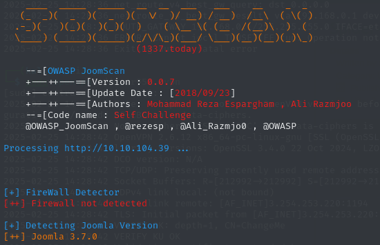

28 - Daily Bugle
Escaneo de puertos
- Escaneo simple
- Escaneo agresivo
Web
Al usar el addon Wappalyzer se puede ver que el gestor de contenidos de la pagina es Joomla:

Obtener versión de Joomla a través de la herramienta Joomscan:

Buscando vulnerabilidades para la versión 3.7.0 de Joomla encuentro la siguiente entrada en exploit-db.com:

Buscando el CVE en internet llego al siguiente repositorio:

Descargo el script de Python y exploto la vulnerabilidad: